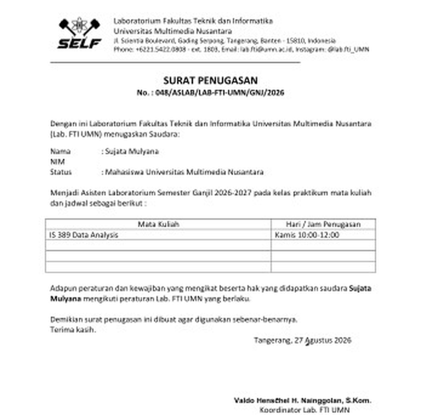
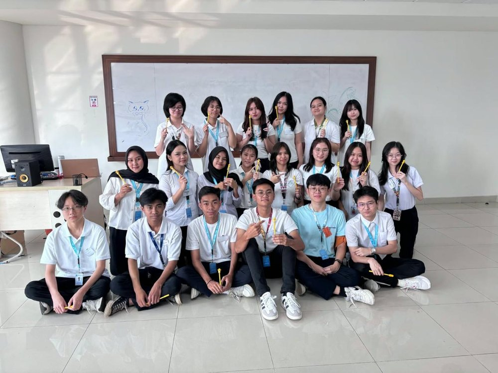

Sujata
Mulyana.
I turn raw data into dashboards and automated reports with Python and Power BI.
Information Systems · Universitas Multimedia Nusantara
F&B sales overview
Rp 1.32 bn
Total paid sales across 3 outlets
- GPA at UMN
- 3.85 / 4.00
- ISFEST 2026 · Data Competition
- Top 5
- Data projects on GitHub
- 3 projects
Selected projects
Two ways to read the same sales data, and a machine learning app you can try.

Business intelligence
F&B Sales Analysis
From 53,820 point-of-sale receipts to a two-page Power BI dashboard for three F&B outlets.
Read case study
Reporting automation
Automated Monthly Sales Report
One Python command turns a month of transactions into a six-sheet Excel report with built-in quality checks.
Read case study
Machine learning
Cardiovascular Risk Prediction App
A Streamlit app that explores cardiovascular risk and shows which features influence each prediction.
Read case studyAbout me
I am an Information Systems student at Universitas Multimedia Nusantara, expected to graduate in 2028, with a GPA of 3.85. This semester I am also a Laboratory Assistant for Data Analysis, helping students work through Python practicum sessions.
My projects follow one pattern: start from raw data, check it carefully, and turn it into something people can use, such as a dashboard, an automated report or a small app. I like confirming that the numbers add up before I present them.
I am looking for a data analytics internship, where I can work on dashboards, report automation and data cleaning. The best way to reach me is a message on LinkedIn.
Skills
The tools I used in the projects above.
Analysis
Python (pandas), SQL, data cleaning and validation, Jupyter Notebook
Dashboards and reports
Power BI (DAX), Excel, XlsxWriter report automation
Modeling and apps
Scikit-learn, Gradient Boosting, Streamlit
Languages
Indonesian (native), English
Experience and awards
Laboratory Assistant for Data Analysis
Universitas Multimedia Nusantara, Tangerang · course IS 389 Data Analysis
- Help students apply data analysis concepts in Python during practicum sessions.
- Guide lab sessions and help students debug code and fix data issues.
- Support practicum grading by reviewing student submissions.
View assignment letter

Mentor, UMN Mentoring 2025 Program
Universitas Multimedia Nusantara, Tangerang
- Guided new students in adapting to campus life and academic activities.
- Helped mentees plan their academic schedule and introduced the university's 5C culture.
View mentoring team photo

Top 5, Data Competition
ISFEST 2026, Information Systems Student Association (HIMSI) UMN